Production-build evidence captured on October 18, 2026. Each language is shown on desktop and mobile, with closed and keyboard-expanded FAQ states.
41 website tests passed: 24 unit, 2 adapter integration, 4 behavior, 10 browser, and 1 smoke. All six layouts passed automated accessibility, keyboard, overflow, image-loading, and runtime checks. Unit logic coverage is 100%; maximum measured source function complexity is 3.
Traceability: tests/bdd/features/product.feature; tests/e2e/product.spec.ts (A1.1/A1.5), tests/smoke/startup.spec.ts, and the unit/integration tests. Full-page captures cover navigation, web-app actions, Today/Calendar/Chart examples, observations, methods, platform availability, FAQ, disclaimer, and footer. Browser-language entry, stable locale links, and the no-JavaScript fallback are exercised by the A1.2/A1.3 browser cases. Example cycle data in app screenshots is illustrative.
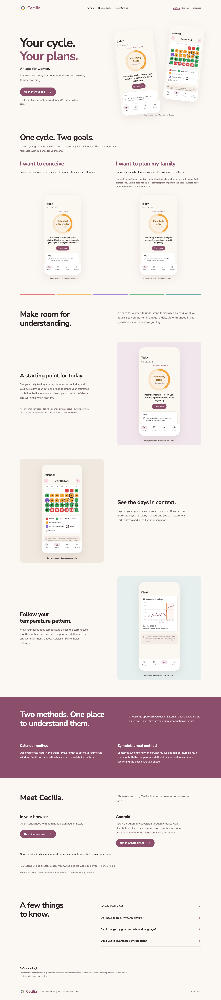
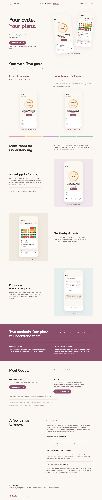
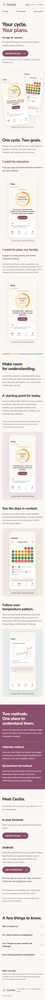
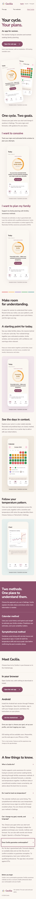
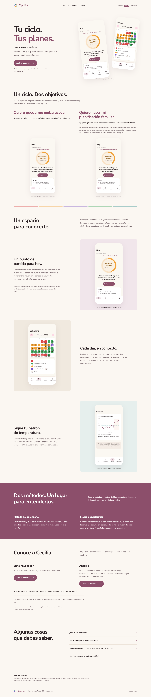
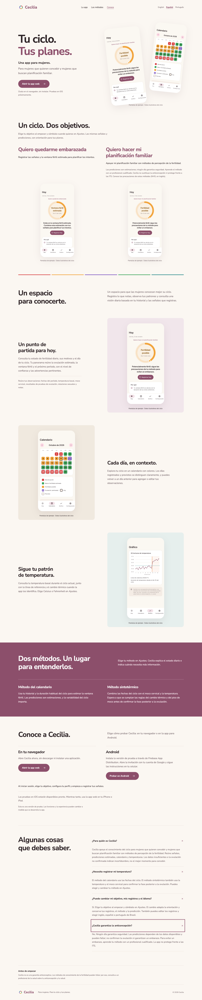
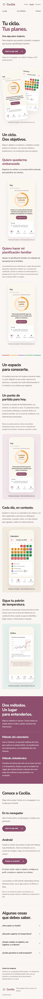
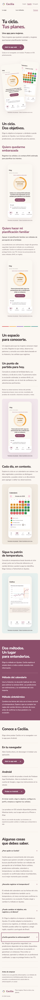
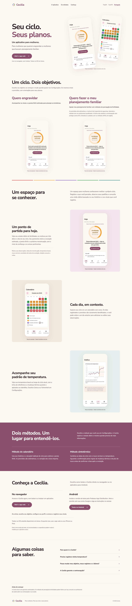
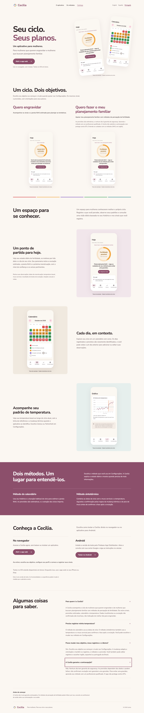
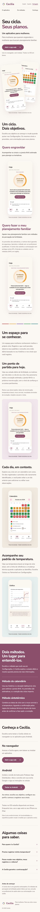
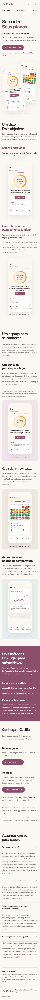